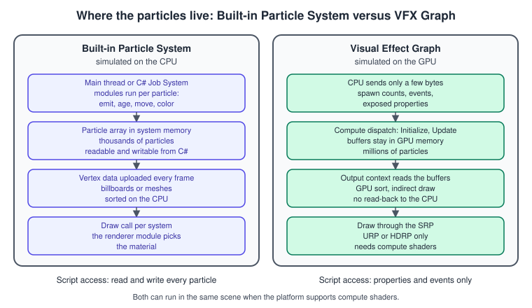
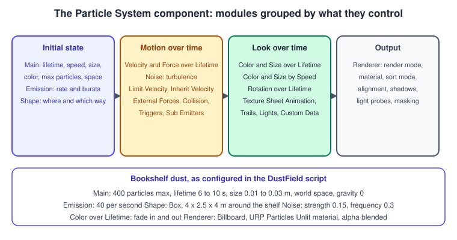
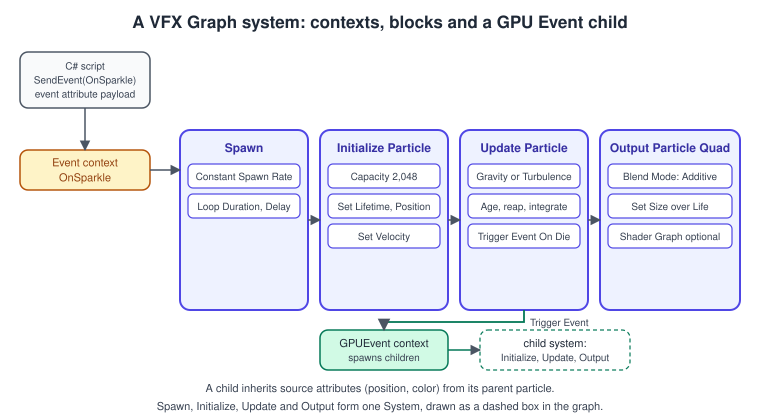
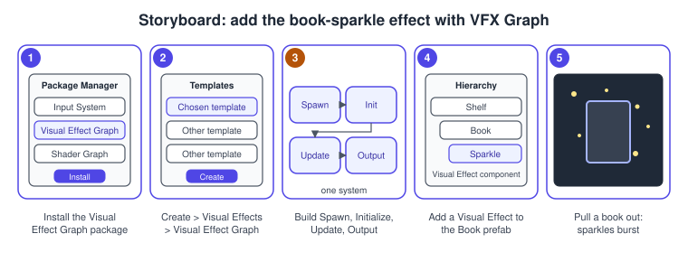

Particles and VFX Graph
|
This content was generated with the assistance of AI and should be verified against the official documentation before being relied on in production. |
Dust turning in the light of a desk lamp and a handful of sparkles when a book leaves the shelf are small effects, but they decide whether a scene feels alive. Unity offers two particle systems for them. The Built-in Particle System (the component named Particle System, "Shuriken" in older books) simulates particles on the CPU, gives scripts full access to each particle and works in every render pipeline. The Visual Effect Graph (VFX Graph) is a node-based editor whose effects run on the GPU, so it can simulate millions of particles, at the price of a compute-shader platform and of limited script access. This page builds one effect with each for the Bookshelf, the floating dust with the Particle System and the book sparkle with the VFX Graph (stage "dust particles, a VFX Graph sparkle" of the running example), and explains when to choose which.
The facts were checked in November 2026 against the Unity 6.3 LTS manual (6000.3) and the Visual Effect Graph package version 17.3 that ships with it; where Unity 6.4, 6.5 or 6.6 changed something, the text says so. The project is the URP 3D template with the Input System. The VFX Graph needs a platform with compute shaders and does not support OpenGL ES; the package manual describes mobile support as not yet out of preview, so check the target platform before committing to it (see the requirements below). The general theory of particles and blending is in Transparency, Blending and Post-Processing; the same dust system written as a Metal compute shader is in Particles (Metal).
Choosing a particle system

The Unity manual compares the two in one table:
| Feature | Built-in Particle System | Visual Effect Graph |
|---|---|---|
Render pipelines |
Built-in, URP, HDRP |
URP, HDRP |
Feasible number of particles |
thousands |
millions |
Authoring |
a component in the Inspector; each module is a predefined behavior |
a graph editor with contexts, blocks and operators |
Physics |
particles interact with Unity physics |
particles interact with elements you define in the graph, for example the depth buffer |
Script interaction |
read and write each particle, collision events, playback control |
exposed properties, events with payloads, playback control |
Frame buffers |
no |
in HDRP, access to the color and depth buffer |
If the project targets platforms with compute shaders, both can be used in the same scene. A practical rule for the Bookshelf: a few hundred particles that must collide with physics, react to scripts or run on every platform (the dust) belong in the Particle System; a large or very dense effect, or one that needs forces and sampled data the Particle System does not have (the sparkle, and later a storm of ten thousand pages), belongs in the VFX Graph.
support compute shaders
and the SRP?"} B -->|"no, or Built-in RP"| P["Built-in Particle System"] B -->|"yes"| C{"More than a few
thousand particles?"} C -->|"yes"| V["VFX Graph"] C -->|"no"| D{"Scripts must read or
write single particles,
or use physics collisions?"} D -->|"yes"| P D -->|"no"| E{"Needs graph features:
GPU events, forces,
depth collisions?"} E -->|"yes"| V E -->|"no"| P
The Built-in Particle System
How a system is organized
A Particle System is one component divided into collapsible modules; each module contains a group of related properties, and most modules are off until you enable them. The Main module configures the initial state of new particles (duration, looping, start lifetime, speed, size, color, gravity modifier, simulation space, maximum particles, what happens when the system stops). Emission sets the rate and the bursts, and Shape the volume or surface that particles spawn from and the direction of the start velocity. The other modules change particles over their lifetime or by their speed. The Renderer module decides how each particle is drawn.

| Module | What it controls |
|---|---|
Main |
duration and looping, start values for lifetime, speed, size, rotation and color, gravity modifier, simulation space (Local, World or Custom), scaling mode, play on awake, max particles, stop action |
Emission |
rate over time, rate over distance, and a list of bursts (time, count, cycles, interval) |
Shape |
where particles appear (sphere, cone, box, mesh, circle, edge and more) and the start direction; a mesh or texture used as a shape needs Read/Write enabled on the asset (enforced since Unity 6.5 for textures and 6.6 for meshes) |
Velocity and Force over Lifetime, Limit Velocity, Inherit Velocity |
how speed evolves, is capped, or follows the emitter |
Noise |
turbulence: strength, frequency, scroll speed, octaves |
External Forces, Collision, Triggers, Sub Emitters |
wind zones and force fields, collisions with planes or the world, trigger callbacks, spawning other systems on birth, death or collision |
Color and Size over Lifetime and by Speed, Rotation over Lifetime and by Speed |
appearance curves and gradients |
Texture Sheet Animation, Trails, Lights, Custom Data |
flipbook animation, ribbons, real-time lights on particles, per-particle user data |
Renderer |
render mode (Billboard, Stretched Billboard, Horizontal or Vertical Billboard, Mesh), material, sort mode, render alignment, min and max particle size, shadows, light and reflection probes, masking, sorting layer, custom vertex streams |
The dust, built in the editor
-
Create an empty GameObject named
Dustas a child of the shelf, and add the component with Add Component > Effects > Particle System. The Scene view shows a Particle Effect panel with Playback Speed, Playback Time and the Particle Count, which is the quickest way to judge an effect. -
Create a material with Create > Material and set its Shader to Universal Render Pipeline > Particles > Unlit. Set Surface Type to Transparent and Blending Mode to Alpha, assign a soft round texture to Base Map, and enable Soft Particles in the Advanced Options so the dust fades where it meets the shelf. Soft Particles only works if Depth Texture is enabled in the URP asset.
-
In the Renderer module assign the material to Material, set Render Mode to Billboard, and turn off Cast Shadows and Receive Shadows, which dust does not need.
-
In the Main module set Max Particles to 400, Start Lifetime to Random Between Two Constants 6 and 10, Start Speed to 0, Start Size to Random Between Two Constants 0.01 and 0.03 meters, Gravity Modifier to 0, and Simulation Space to World so the particles do not follow the shelf when it moves.
-
In Emission set Rate over Time to 40. In Shape choose Box and set the scale to the size of the volume around the shelf, for example (4, 2.5, 4).
-
Enable Noise with Strength 0.15 and Frequency 0.3 for a slow drift, and enable Color over Lifetime with a gradient whose alpha rises from 0, holds, and falls back to 0 so particles fade in and out.
-
Press Play in the Scene view panel and adjust the values until the dust is visible in the lamp beam and invisible outside it.
The same dust in code
A configuration script keeps the effect reproducible: the values live in serialized fields, and a new scene gets the same dust by adding the component. Module properties are accessed through struct "interface" values (system.main, system.emission); you take a local copy, set its fields, and the change applies to the system. Some Main module properties, such as duration, cannot be changed while the system is playing, so the script stops and clears it first.
using UnityEngine;
using UnityEngine.Rendering;
namespace Bookshelf.Effects
{
/// <summary>Configures a Particle System as slow, drifting dust around the shelf.</summary>
[RequireComponent(typeof(ParticleSystem))]
public sealed class DustField : MonoBehaviour
{
[SerializeField] Material dustMaterial;
[SerializeField, Min(1)] int maxParticles = 400;
[SerializeField] Vector3 boxSize = new Vector3(4f, 2.5f, 4f);
[SerializeField, Min(0f)] float emissionPerSecond = 40f;
[SerializeField, Range(0f, 1f)] float noiseStrength = 0.15f;
ParticleSystem system;
void Awake()
{
system = GetComponent<ParticleSystem>();
Configure();
}
void Configure()
{
// Duration and a few other Main properties cannot change while playing.
system.Stop(true, ParticleSystemStopBehavior.StopEmittingAndClear);
ParticleSystem.MainModule main = system.main;
main.loop = true;
main.playOnAwake = false;
main.duration = 10f;
main.maxParticles = maxParticles;
main.simulationSpace = ParticleSystemSimulationSpace.World;
main.startLifetime = new ParticleSystem.MinMaxCurve(6f, 10f);
main.startSpeed = 0f;
main.startSize = new ParticleSystem.MinMaxCurve(0.01f, 0.03f);
main.startColor = new Color(1f, 0.95f, 0.8f, 0.6f);
main.gravityModifier = 0f;
ParticleSystem.EmissionModule emission = system.emission;
emission.rateOverTime = emissionPerSecond;
ParticleSystem.ShapeModule shape = system.shape;
shape.enabled = true;
shape.shapeType = ParticleSystemShapeType.Box;
shape.scale = boxSize;
ParticleSystem.NoiseModule noise = system.noise;
noise.enabled = true;
noise.strength = noiseStrength;
noise.frequency = 0.3f;
noise.scrollSpeed = 0.1f;
var fade = new Gradient();
fade.SetKeys(
new[] { new GradientColorKey(Color.white, 0f), new GradientColorKey(Color.white, 1f) },
new[]
{
new GradientAlphaKey(0f, 0f),
new GradientAlphaKey(1f, 0.2f),
new GradientAlphaKey(1f, 0.8f),
new GradientAlphaKey(0f, 1f),
});
ParticleSystem.ColorOverLifetimeModule colorOverLifetime = system.colorOverLifetime;
colorOverLifetime.enabled = true;
colorOverLifetime.color = new ParticleSystem.MinMaxGradient(fade);
var particleRenderer = GetComponent<ParticleSystemRenderer>();
particleRenderer.renderMode = ParticleSystemRenderMode.Billboard;
particleRenderer.sharedMaterial = dustMaterial;
particleRenderer.shadowCastingMode = ShadowCastingMode.Off;
particleRenderer.receiveShadows = false;
system.Play();
}
/// <summary>Emits a small puff of dust at a world position, for example when a book leaves the shelf.</summary>
public void Puff(Vector3 worldPosition, int count = 24)
{
var parameters = new ParticleSystem.EmitParams
{
position = worldPosition,
applyShapeToPosition = false,
};
for (int i = 0; i < count; i++)
{
parameters.velocity = Random.insideUnitSphere * 0.25f;
system.Emit(parameters, 1);
}
}
}
}Custom behavior with the C# Job System
The Particle System offers GetParticles and SetParticles, which copy every particle to a managed array and back on the main thread. For per-particle logic the better route is a Particle System job: Unity hands the job the arrays of particle properties, the job runs on worker threads, and it can be compiled with Burst. IJobParticleSystem runs one job over all particles, IJobParticleSystemParallelFor splits them across threads with one index each, and IJobParticleSystemParallelForBatch hands each job a range. The job sees only the particles of its own system; other data is passed as fields.
The dust is pulled gently toward the desk lamp. The component fills the job fields in Update and schedules the job from OnParticleUpdateJobScheduled, the message Unity sends to the MonoBehaviours on the system’s GameObject when the system’s own update jobs are scheduled. Positions and velocities are in the system’s simulation space, which is World for the dust.
using Unity.Burst;
using Unity.Mathematics;
using UnityEngine;
using UnityEngine.ParticleSystemJobs;
namespace Bookshelf.Effects
{
/// <summary>Pulls the dust toward the desk lamp with a Burst-compiled particle job.</summary>
[RequireComponent(typeof(ParticleSystem))]
public sealed class DustLampPull : MonoBehaviour
{
[SerializeField] Transform lamp;
[SerializeField, Min(0.1f)] float range = 1.5f;
[SerializeField, Min(0f)] float strength = 0.4f;
ParticleSystem system;
PullJob job;
void Awake()
{
system = GetComponent<ParticleSystem>();
}
void Update()
{
if (lamp == null)
{
return;
}
job.lampPosition = lamp.position;
job.rangeSqr = range * range;
job.strength = strength;
job.deltaTime = Time.deltaTime;
}
// Called by Unity when this Particle System schedules its update jobs.
void OnParticleUpdateJobScheduled()
{
if (lamp != null)
{
job.Schedule(system, 1024);
}
}
[BurstCompile]
struct PullJob : IJobParticleSystemParallelFor
{
public float3 lampPosition;
public float rangeSqr;
public float strength;
public float deltaTime;
public void Execute(ParticleSystemJobData particles, int index)
{
var positionsX = particles.positions.x;
var positionsY = particles.positions.y;
var positionsZ = particles.positions.z;
var velocitiesX = particles.velocities.x;
var velocitiesY = particles.velocities.y;
var velocitiesZ = particles.velocities.z;
float3 position = new float3(positionsX[index], positionsY[index], positionsZ[index]);
float3 toLamp = lampPosition - position;
float distanceSqr = math.lengthsq(toLamp);
if (distanceSqr > rangeSqr || distanceSqr < 1e-6f)
{
return;
}
// Stronger near the lamp, zero at the edge of the range.
float3 push = math.normalize(toLamp) * (strength * (1f - distanceSqr / rangeSqr) * deltaTime);
velocitiesX[index] += push.x;
velocitiesY[index] += push.y;
velocitiesZ[index] += push.z;
}
}
}
}Unity.Mathematics is the Mathematics package (com.unity.mathematics); the render pipeline packages depend on it, so it is already present in a URP project. The general rules for jobs and Burst are in DOTS: ECS, Jobs and Burst.
Rendering particles in URP
URP provides three particle shaders: Particles Lit (almost photorealistic, the most expensive), Particles Simple Lit (a simple lighting approximation) and Particles Unlit (no lighting, cheapest). A few rules that apply to all of them:
-
Particles are transparent. The blending mode sets the look: Alpha for dust and smoke, Additive for sparks and glows, Premultiply for particles that must not brighten as they overlap. Each overlapping layer is drawn over the previous one, so overdraw (many large soft quads stacked) is the dominant cost of an effect, not the simulation.
-
Sorting. The Renderer module’s Sort Mode can be None, By Distance, Oldest in Front or Youngest in Front; sorting costs CPU time and only orders particles within one system. Sorting Fudge changes where the whole system sits relative to other transparent objects, and Sorting Priority on the material has a similar effect on the render queue.
-
Soft Particles and Camera Fading fade particles near opaque geometry or the camera; both need the Depth Texture option in the URP asset. Distortion needs it too.
-
Particles are not SRP Batcher objects. The manual lists "it can’t be a particle" among the SRP Batcher requirements. For mesh particles, Enable Mesh GPU Instancing in the Renderer module draws them with instancing if the shader supports it.
-
Shadows, probes and reflections are per system in the Renderer module; turn off what the effect does not need.
The Visual Effect Graph
Requirements and setup
The Visual Effect Graph is a package (com.unity.visualeffectgraph) that works with URP and HDRP and requires a platform that returns true for SystemInfo.supportsComputeShaders and a value above zero for SystemInfo.maxComputeBufferInputsVertex (support for storage buffers). It does not support OpenGL ES, and in URP it does not support the gamma color space. In HDRP the package is installed automatically with the HDRP package. Every graph package version works with the render pipeline package of the same version, so the Visual Effect Graph, URP and Shader Graph are upgraded together. The package manual describes the URP and mobile support as not yet out of preview; treat a Quest or phone build as something to test early, not to assume.
The anatomy of a graph
A graph is built from four kinds of elements:
-
Contexts are the stages of processing; each is a node with flow ports above and below. A chain of connected contexts forms a System, drawn inside a dashed box.
-
Blocks are the operations stacked inside a context. Blocks are the only elements that write particle attributes.
-
Operators are nodes that compute values (math, noise, sampling, reading attributes) and feed block and context inputs.
-
Properties are named values on the Blackboard; an exposed property can be edited on the Visual Effect component and set from C#.
A particle system has four contexts, run in this order:
| Context | What it does |
|---|---|
Spawn |
decides how many particles to create and when: a loop with a duration, a loop count and optional delays, and blocks such as Constant Spawn Rate, Variable Spawn Rate, Single Burst, Periodic Burst and Spawn Over Distance. It receives Start and Stop flow from Events |
Initialize Particle |
creates each new particle and sets its starting attributes. Capacity is the fixed size of the simulation and scales the memory allocation; spawn requests beyond the capacity are discarded. Bounds Setting Mode (Manual, Recorded or Automatic) sets the culling bounds |
Update Particle |
runs every frame: ages and reaps particles, integrates velocity into position when Update Position is on, and runs force and collision blocks such as Gravity and Turbulence |
Output Particle |
draws the particles: Output Particle Primitive (quad, triangle or octagon), Mesh, Line, Point, Strip and Shader Graph outputs. The Blend Mode is Opaque, Alpha, Premultiplied Alpha or Additive, and the Alpha and Premultiplied Alpha outputs sort on the GPU by default |

Attributes are the per-particle data: position, velocity, age, lifetime, alive, size, color (a Vector3), alpha and more. A system stores an attribute only when a later context reads it, so unused attributes cost no memory. You can also add custom attributes on the Blackboard.
Source: Visual Effect Graph: Systems
Source: Visual Effect Graph: Attributes
Events and GPU Events
Events are the inputs of a graph. An Event is a string name. An Event context with that name connects to the Start or Stop port of a Spawn context or to an Initialize context. Two events exist implicitly: OnPlay starts spawning when the component enables or Play() is called, and OnStop stops it. If you connect your own Event context to a Spawn context’s Start port, the implicit OnPlay binding is removed, which is how the Bookshelf sparkle stays silent until the script asks for it.
An event can carry a payload of attributes. C# sets them on a VFXEventAttribute and sends it with the event; the payload travels through the Spawn context to Initialize, where a Get Source Attribute operator or an Inherit Source block reads it. That is how the sparkle appears at the position of the book that was pulled.
GPU Events spawn particles from other particles, entirely on the GPU. A Trigger Event block in an Initialize or Update context sends GPU events; its Mode is Always, Over Time, Over Distance, On Die or On Collide. The block connects to a GPUEvent context, which connects to the Initialize context of a child system, and the child reads the parent’s attributes as source attributes (position, velocity, color). Trigger blocks always run at the end of the Update context, and the flow from a Spawn context and from a GPU Event cannot be mixed in the same Initialize. A typical use is a spark that spawns a fading ember where it dies.
Source: Visual Effect Graph: Events
The book sparkle, step by step
-
Install the package: open Window > Package Management > Package Manager, select Unity Registry in the Packages list, choose Visual Effect Graph and select Install.
-
Create the asset with Assets > Create > Visual Effects > Visual Effect Graph. The template window opens; pick a template as a starting point and create the asset, named
BookSparkle. (The Learning Templates sample in the package page of the Package Manager is a collection of small graphs for studying each concept.) -
Drag the asset onto the Book prefab in the Hierarchy. Unity creates a child GameObject with a Visual Effect component that references the asset, placed at the parent’s transform.
-
Open the graph by double-clicking the asset. Right-click in an empty area, choose Create Node and add an Event context, and type
OnSparklein its Event Name. Connect it to the Start port of the Spawn context. Remove the template’s spawn block and add a Single Burst block with Spawn Mode Constant and Count 60. -
In the Initialize Particle context set Capacity to 256 and leave the bounds mode on Recorded until you have recorded the effect once. Use Set Lifetime with a random range (0.4 to 0.9 seconds), Set Velocity with a random direction, and a block that inherits the position and color from the source, so the event payload decides where and in which tint the sparkle appears.
-
In the Update Particle context enable Update Position and add a Turbulence block (intensity about 0.3) and a Gravity block with a small force such as (0, -0.5, 0).
-
In the Output Particle Quad context set Blend Mode to Additive, assign a small star texture, and add blocks that make the size and the alpha fall to zero over the life of the particle.
-
Open the Blackboard (the toolbar button or Shift+1), add a Float property named
Intensity, enable Exposed, and multiply the color or the burst count by it. The C# script will set it by name. -
Select the effect GameObject, check that Asset Template shows
BookSparkle, and add theBookSparklescript below. Enter Play mode and callSparklefrom the code that removes a book from the shelf.

Driving the effect from C#
The VisualEffect component is the runtime handle of one instance. Properties and events can be addressed by a string name, by an integer ID from Shader.PropertyToID (the faster way, computed once), or with the ExposedProperty helper class. An VFXEventAttribute is created by the component, filled with its SetFloat, SetVector3 and similar methods and reused: when an event is sent Unity copies the attribute, so it is safe to change it afterwards. The component processes pushed events in its next update, which is after LateUpdate.
using UnityEngine;
using UnityEngine.VFX;
namespace Bookshelf.Effects
{
/// <summary>Plays the BookSparkle graph at a position, with a tint and an intensity.</summary>
[RequireComponent(typeof(VisualEffect))]
public sealed class BookSparkle : MonoBehaviour
{
// Event name used by the Event context, and attribute names of the payload.
static readonly int SparkleEvent = Shader.PropertyToID("OnSparkle");
static readonly int PositionId = Shader.PropertyToID("position");
static readonly int ColorId = Shader.PropertyToID("color");
static readonly int IntensityId = Shader.PropertyToID("Intensity");
[SerializeField, Range(0f, 4f)] float baseIntensity = 1f;
VisualEffect effect;
VFXEventAttribute payload;
void Awake()
{
effect = GetComponent<VisualEffect>();
// The component creates event attributes that match the assigned graph; keep one and reuse it.
payload = effect.CreateVFXEventAttribute();
}
public void Sparkle(Vector3 worldPosition, Color tint, float strength = 1f)
{
if (effect.HasFloat(IntensityId))
{
effect.SetFloat(IntensityId, baseIntensity * strength);
}
payload.SetVector3(PositionId, worldPosition);
payload.SetVector3(ColorId, new Vector3(tint.r, tint.g, tint.b));
effect.SendEvent(SparkleEvent, payload);
}
}
}For values that change continuously, such as the position of the desk lamp, use a Property Binder: a component that connects scene values (a Transform, a Light, an input axis, an audio spectrum) to exposed properties every frame, with no code. Playback is controlled with Play, Stop, pause, playRate and Reinit.
Shader Graph on VFX outputs
An output context can render particles with a custom shader graph. In the graph’s Graph Settings tab choose the HDRP or Universal target and enable Support VFX Graph; the graph then appears in the Shader Graph slot of an output context (such as Output Particle ShaderGraph Mesh or Quad), and the graph’s exposed properties show up on the output. A graph that supports the VFX Graph also works as a normal shader, but compiles more slowly. The older Visual Effect Target is deprecated. Unity 6.6 lets you create the shader graph directly from the output block with New in the Shader Graph property, picking a VFX-compatible template, and lets the VFX Graph use promoted properties and keywords from a Sub Graph. For the shader graphs themselves see Shader Graph and HLSL.
Bounds, culling and instancing
Unity culls an effect when the camera cannot see its bounds, the union of the bounds of each system, set in each Initialize context. Bounds that are too small make particles vanish while still on screen; bounds that are too large keep the effect simulating and drawing for nothing. The default Recorded mode needs one recording from the VFX Control panel; Manual lets you compute them from operators, and Automatic has Unity compute them.
Effects that use the same graph asset are instanced: their data lives in shared buffers and they are simulated and drawn together in batches. Instancing is on by default (except for graphs with Output Mesh contexts and Output Event Handlers) and the batch capacity can be automatic or custom in the asset’s Inspector. Fifty small sparkles from one asset are cheaper than fifty different assets. The VFX Project Settings (Edit > Project Settings > VFX) expose the maximum capacity, the fixed time step and how long an empty batch is kept.
Source: Visual Effect Graph: Instancing
Using both in one scene
Nothing stops the Bookshelf from using the Particle System for the dust and the VFX Graph for the sparkle. Keep the following in mind:
-
Both are transparent and sorted separately; use Sorting Priority or the render queue if the dust must always appear behind the sparkle.
-
Keep one shared material for particles of the same kind, so the number of shader variants stays small.
-
A Timeline can drive both: a Particle System through an Activation or Control track and a Visual Effect through events; see Timeline and Cutscenes.
-
The VFX Graph also renders in HDRP, where it can use the color and depth buffer and has lit outputs; see HDRP Overview.
Common mistakes
-
Setting a Main module property while the system plays. Changing
duration(and some others) on a playing system logs an error and is ignored. Stop and clear first, or set it in the Inspector. -
Using
system.main.startSize = xwithout a local variable. The module values are structs:system.mainis a read-only copy, so the compiler rejects the assignment. Store it in a local (var main = system.main;) and assign there. -
Allocating in
Update.GetParticlesinto a freshly allocated array every frame produces garbage; allocate the array once with the maximum particle count, or use a particle job. -
A VFX Graph effect that never appears. Check, in order: the platform supports compute shaders, the effect has a render pipeline asset it can compile for, the Capacity is not zero, the Spawn context receives a Start event (an Event context replaces the implicit
OnPlay), and the bounds contain the particles. -
Event name mismatch. The string in
SendEventmust equal the Event context’s name; a typo fails silently. Keep the name in one constant. -
Reading the payload with the wrong attribute. An event attribute is only used where the graph reads it with a Get Source Attribute operator or an Inherit Source block.
-
One graph asset per sparkle. Instancing batches only effects that share an asset.
-
Forgetting Read/Write on a texture or mesh used as a Shape. Since Unity 6.5 (textures) and 6.6 (meshes) Unity no longer enables it at build time: the Inspector shows a warning, and a build fails until you enable Read/Write on the asset.
-
Soft Particles that do nothing. They need Depth Texture enabled in the URP asset and a Transparent surface type.
-
Lighting dust with the Lit particle shader. It is the most expensive of the three and the dust is too small to show a lit surface; use Particles Unlit.
Performance notes
-
Overdraw first. A few large soft particles cost more than thousands of small ones. Shrink quads to their visible area, use the octagon primitive in the VFX Graph to cut transparent pixels, and keep Additive sparks small.
-
Particle System: keep Max Particles close to what the effect needs; the Collision module (especially world collisions with many planes), the Lights module and Trails multiply the cost per particle; Sub Emitters create new systems' worth of particles. A custom job with Burst beats
GetParticlesandSetParticles. -
VFX Graph: the simulation is cheap per particle but not free per effect, because each effect adds compute dispatches; share assets, set a realistic Capacity (it reserves memory), set tight bounds, and use
VisualEffectAsset.PrewarmComputeShaders(Unity 6.5) to avoid a hitch the first time an effect compiles its compute shaders. -
Mobile and Web: test the VFX Graph on the real device; where compute is missing, fall back to a Particle System through a quality setting.
-
Measure. The Profiler shows the Particle System update and the VFX Graph update; the Frame Debugger shows each particle draw call. The method is in Performance and Profiling and Profiling and Optimization.
What changed recently
| When | What |
|---|---|
Unity 6.3 LTS (December 2025) |
sticky notes in the VFX Graph can be placed in groups and come in three colors |
Unity 6.5 (2026) |
the VFX Graph template window gains search, filtering and ordering; |
Unity 6.6 (September 2026) |
create a shader graph from a VFX output block; promoted Sub Graph properties and keywords usable in the VFX Graph; particle shader graphs for the Built-in Particle System in URP with dedicated particle nodes; the same Read/Write requirement for meshes used by a Particle System Shape module |
Source: What’s new in Unity 6.3
Source: What’s new in Unity 6.5
Source: What’s new in Unity 6.6
Where the books are outdated
Particles appear in UIA (Unity in Action, 3rd edition, chapter 4, written for Unity 2020.3), where a Particle System with the default particle material makes a simple effect; GDP (Game Development Patterns with Unity 2021) has no particle chapter. The Particle System workflow in the book still applies, but the surroundings changed:
| Topic | What the book shows | Current practice (Unity 6.3 LTS) |
|---|---|---|
Particle system component |
a Particle System with its modules in the Inspector |
unchanged; the modules and Scene view panel work as before, and the Job System offers custom per-particle logic |
Particle material |
the default particle material of the Built-in Render Pipeline |
the Built-in Render Pipeline is deprecated since Unity 6.5; URP uses the Particles Unlit, Simple Lit and Lit shaders, or a particle shader graph |
Large effects |
only the CPU Particle System exists |
the VFX Graph simulates millions of particles on the GPU in URP and HDRP |
Pipeline |
no Render Graph or Scriptable Render Pipeline concepts |
particles are drawn through the SRP; see URP in Depth |
See also
-
Transparency, Blending and Post-Processing: the blending theory behind particle rendering.
-
GPU Architecture Basics: why many small independent items suit the GPU.
-
Particles (Metal): the same dust as a hand-written compute and render pass.
-
Shader Graph and HLSL: shader graphs for particles and the hover glow.
-
URP in Depth: the render pipeline that draws the particles.
-
HDRP Overview: VFX Graph lit outputs and the frame buffers.
-
DOTS: ECS, Jobs and Burst: jobs and Burst in depth.
-
Timeline and Cutscenes: playing effects from a timeline.
-
Profiling and Optimization: measuring overdraw and particle cost.
-
Performance and Profiling: the general method.